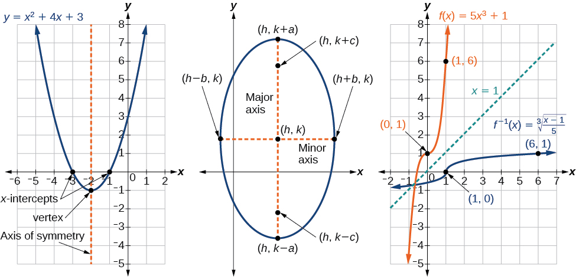

Preface
About OpenStax
OpenStax is part of Rice University, which is a 501(c)(3) nonprofit charitable corporation. Our mission is to make an amazing education accessible for all. Through our partnerships with philanthropic organizations and our alliance with other educational resource companies, we’re breaking down the most common barriers to learning. Because we believe that everyone should and can have access to knowledge.
About OpenStax Resources
Customization
Precalculus 2e is licensed under a Creative Commons Attribution-NonCommercial-ShareAlike 4.0 (CC BY-NC-SA) license, which means that you can non-commercially distribute, remix, and build upon the content, as long as you provide attribution to OpenStax and its content contributors, and distribute all derivatives under the same license.
Because our books are openly licensed, you are free to use the entire book or pick and choose the sections that are most relevant to the needs of your course. Feel free to remix the content by assigning your students certain chapters and sections in your syllabus, in the order that you prefer. You can even provide a direct link in your syllabus to the sections in the web view of your book.
Instructors also have the option of creating a customized version of their OpenStax book. The custom version can be made available to students in low-cost print or digital form through their campus bookstore. Visit your book page on openstax.org for more information.
Art attribution
In Precalculus 2e, most photos and third-party illustrations contain attribution to their creator, rights holder, host platform, and/or license within the caption. For any art that is openly licensed, non-commercial users or organizations may reuse the art as long as they provide the same attribution to its original source. (Commercial entities should contact OpenStax to discuss reuse rights and permissions.) To maximize readability and content flow, some art does not include attribution in the text. If you reuse art from this text that does not have attribution provided, use the following attribution: Copyright Rice University, OpenStax, under CC BY-NC-SA 4.0 license.
Errata
All OpenStax textbooks undergo a rigorous review process. However, like any professional-grade textbook, errors sometimes occur. Since our books are web based, we can make updates periodically when deemed pedagogically necessary. If you have a correction to suggest, submit it through the link on your book page on openstax.org. Subject matter experts review all errata suggestions. OpenStax is committed to remaining transparent about all updates, so you will also find a list of past errata changes on your book page on openstax.org.
Format
You can access this textbook for free in web view or PDF through openstax.org, and for a low cost in print.
About Precalculus 2e
Precalculus 2e is adaptable and designed to fit the needs of a variety of precalculus courses. It is a comprehensive text that covers more ground than a typical one- or two-semester college-level precalculus course. The content is organized by clearly-defined learning objectives, and includes worked examples that demonstrate problem-solving approaches in an accessible way.
Coverage and Scope
Precalculus 2e contains twelve chapters, roughly divided into three groups.
- Chapter 1: Functions
- Chapter 2: Linear Functions
- Chapter 3: Polynomial and Rational Functions
- Chapter 4: Exponential and Logarithmic Functions
- Chapter 5: Trigonometric Functions
- Chapter 6: Periodic Functions
- Chapter 7: Trigonometric Identities and Equations
- Chapter 8: Further Applications of Trigonometry
- Chapter 9: Systems of Equations and Inequalities
- Chapter 10: Analytic Geometry
- Chapter 11: Sequences, Probability and Counting Theory
- Chapter 12: Introduction to Calculus
Development Overview
Precalculus 2e is the product of a collaborative effort by a group of dedicated authors, editors, and instructors whose collective passion for this project has resulted in a text that is remarkably unified in purpose and voice. Special thanks is due to our Lead Author, Jay Abramson of Arizona State University, who provided the overall vision for the book and oversaw the development of each and every chapter, drawing up the initial blueprint, reading numerous drafts, and assimilating field reviews into actionable revision plans for our authors and editors.
The first eight chapters are built on the foundation of Precalculus: An Investigation of Functions by David Lippman and Melonie Rasmussen. Chapters 9-12 were written and developed by our expert and highly experienced author team. All twelve chapters follow a new and innovative instructional design, and great care has been taken to maintain a consistent voice from cover to cover. New features have been introduced to flesh out the instruction, all of the graphics have been redone in a more contemporary style, and much of the content has been revised, replaced, or supplemented to bring the text more in line with mainstream approaches to teaching precalculus.
Accuracy of the Content
We understand that precision and accuracy are imperatives in mathematics, and undertook an dedicated accuracy program led by experienced faculty. Examples, art, problems, and solutions were reviewed by dedicated faculty, with a separate team evaluating the answer key and solutions.
The text also benefits from years of usage by thousands of faculty and students. A core aspect of the second edition revision process included consolidating and ensuring consistency with regard to any errata and corrections that have been implemented during the series' extensive usage and incorporation into homework systems.
Changes to the Second Edition
The Precalculus 2e revision focused on mathematical clarity and accuracy as well as inclusivity. Examples, Exercises, and Solutions were reviewed by multiple faculty experts. All improvement suggestions and errata updates, driven by faculty and students from several thousand colleges, were considered and unified across the different formats of the text.
OpenStax and our authors are aware of the difficulties posed by shifting problem and exercise numbers when textbooks are revised. In an effort to make the transition to the 2nd edition as seamless as possible, we have minimized any shifting of exercise numbers.
The revision also focused on supporting inclusive and welcoming learning experiences. The introductory narratives, example and problem contexts, and even many of the names used for fictional people in the text were all reviewed using a diversity, equity, and inclusion framework. Several hundred resulting revisions improve the balance and relevance to the students using the text, while maintaining a variety of applications to diverse careers and academic fields. In particular, explanations of scientific and historical aspects of mathematics have been expanded to include more contributors. For example, the authors added additional historical and multicultural context regarding what is widely known as Pascal’s Triangle, and similarly added details regarding the international process of decoding the Enigma machine (including the role of Polish college students). Several chapter-opening narratives and in-chapter references are completely new, and contexts across all chapters were specifically reviewed for equity in gender representation and connotation.
Pedagogical Foundations and Features
Learning Objectives
Each chapter is divided into multiple sections (or modules), each of which is organized around a set of learning objectives. The learning objectives are listed explicitly at the beginning of each section and are the focal point of every instructional element.
Narrative Text
- Key terms are boldfaced, typically when first introduced and/or when formally defined.
- Key concepts and definitions are called out in a blue box for easy reference.
Examples
Each learning objective is supported by one or more worked examples that demonstrate the problem-solving approaches that students must master. Typically, we include multiple Examples for each learning objective in order to model different approaches to the same type of problem, or to introduce similar problems of increasing complexity. All told, there are more than 650 Examples, or an average of about 55 per chapter.
All Examples follow a simple two- or three-part format. First, we pose a problem or question. Next, we demonstrate the Solution, spelling out the steps along the way. Finally (for select Examples), we conclude with an Analysis reflecting on the broader implications of the Solution just shown.
Figures
Precalculus 2e contains more than 2000 figures and illustrations, the vast majority of which are graphs and diagrams. Art throughout the text adheres to a clear, understated style, drawing the eye to the most important information in each figure while minimizing visual distractions. Color contrast is employed with discretion to distinguish between the different functions or features of a graph.

Supporting Features
Several elements, each marked by a distinctive icon, serve to support Examples.
- A How To is a list of steps necessary to solve a certain type of problem. A How To typically precedes an Example that proceeds to demonstrate the steps in action.
- A Try It exercise immediately follows an Example or a set of related Examples, providing the student with an immediate opportunity to solve a similar problem. In the PDF and the Web View version of the text, answers to the Try It exercises are located in the Answer Key.
- A Q&A may appear at any point in the narrative, but most often follows an Example. This feature pre-empts misconceptions by posing a commonly asked yes/no question, followed by a detailed answer and explanation.
- The Media icon appears at the conclusion of each section, just prior to the Section Exercises. This icon marks a list of links to online video tutorials that reinforce the concepts and skills introduced in the section.
While we have selected tutorials that closely align to our learning objectives, we did not produce these tutorials, nor were they specifically produced or tailored to accompany Precalculus 2e.
Section Exercises
Each section of every chapter concludes with a well-rounded set of exercises that can be assigned as homework or used selectively for guided practice. With over 5900 exercises across the 12 chapters, instructors should have plenty from which to choose.
- Verbal questions assess conceptual understanding of key terms and concepts.
- Algebraic problems require students to apply algebraic manipulations demonstrated in the section.
- Graphical problems assess students’ ability to interpret or produce a graph.
- Numeric problems require the student to perform calculations or computations.
- Technology problems encourage exploration through use of a graphing utility, either to visualize or verify algebraic results or to solve problems via an alternative to the methods demonstrated in the section.
- Extensions pose problems more challenging than the Examples demonstrated in the section. They require students to synthesize multiple learning objectives or apply critical thinking to solve complex problems.
- Real-World Applications present realistic problem scenarios from fields such as physics, geology, biology, finance, and the social sciences.
Chapter Review Features
- Key Terms provides a formal definition for each bold-faced term in the chapter.
- Key Equations presents a compilation of formulas, theorems, and standard-form equations.
- Key Concepts summarizes the most important ideas introduced in each section, linking back to the relevant Example(s) in case students need to review.
- Chapter Review Exercises include 40-80 practice problems that recall the most important concepts from each section.
- Practice Test includes 25-50 problems assessing the most important learning objectives from the chapter. Note that the practice test is not organized by section, and may be more heavily weighted toward cumulative objectives as opposed to the foundational objectives covered in the opening sections.
Answers to Questions in the Book
All answers to Try It questions are provided in the Answer Key. Answers to Examples are provided directly below the question. Students can find odd-numbered answers to Review Exercises, Practice Test, and Section Exercises in the Answer Key. Answers to all odd and even-numbered questions are provided only to instructors in the Instructor Answer Guide via the Instructor Resources page.
Additional Resources
Student and Instructor Resources
We’ve compiled additional resources for both students and instructors, including Getting Started Guides, instructor solution manual, and PowerPoint slides. Instructor resources require a verified instructor account, which can be requested on your openstax.org log-in. Take advantage of these resources to supplement your OpenStax book.
Community Hubs
OpenStax partners with the Institute for the Study of Knowledge Management in Education (ISKME) to offer Community Hubs on OER Commons—a platform for instructors to share community-created resources that support OpenStax books, free of charge. Through our Community Hubs, instructors can upload their own materials or download resources to use in their own courses, including additional ancillaries, teaching material, multimedia, and relevant course content. We encourage instructors to join the hubs for the subjects most relevant to your teaching and research as an opportunity both to enrich your courses and to engage with other faculty. To reach the Community Hubs, visit www.oercommons.org/hubs/openstax.
Technology partners
As allies in making high-quality learning materials accessible, our technology partners offer optional low-cost tools that are integrated with OpenStax books. To access the technology options for your text, visit your book page on openstax.org.
About the Authors
Senior Contributing Author
Jay Abramson, Arizona State University
Jay Abramson has been teaching Precalculus for over 35 years, the last 20 at Arizona State University, where he is a principal lecturer in the School of Mathematics and Statistics. His accomplishments at ASU include co-developing the university’s first hybrid and online math courses as well as an extensive library of video lectures and tutorials. In addition, he has served as a contributing author for two of Pearson Education’s math programs, NovaNet Precalculus and Trigonometry. Prior to coming to ASU, Jay taught at Texas State Technical College and Amarillo College. He received Teacher of the Year awards at both institutions.
Contributing Authors
Valeree Falduto, Palm Beach State College
Rachael Gross, Towson University
David Lippman, Pierce College
Melonie Rasmussen, Pierce College
Rick Norwood, East Tennessee State University
Nicholas Belloit, Florida State College Jacksonville
Jean-Marie Magnier, Springfield Technical Community College
Harold Whipple
Christina Fernandez
Faculty Reviewers and Consultants
Nina Alketa, Cecil College
Kiran Bhutani, Catholic University of America
Brandie Biddy, Cecil College
Lisa Blank, Lyme Central School
Bryan Blount, Kentucky Wesleyan College
Jessica Bolz, The Bryn Mawr School
Sheri Boyd, Rollins College
Sarah Brewer, Alabama School of Math and Science
Charles Buckley, St. Gregory's University
Michael Cohen, Hofstra University
Kenneth Crane, Texarkana College
Rachel Cywinski, Alamo Colleges
Nathan Czuba
Srabasti Dutta, Ashford University
Kristyanna Erickson, Notre Dame of Maryland University
Nicole Fernandez, Georgetown University / Kent State University
David French, Tidewater Community College
Douglas Furman, SUNY Ulster
Lance Hemlow, Raritan Valley Community College
Erinn Izzo, Nicaragua Christian Academy
John Jaffe
Jerry Jared, Blue Ridge School
Stan Kopec, Mount Wachusett Community College
Kathy Kovacs
Cynthia Landrigan, Erie Community College
Sara Lenhart, Christopher Newport University
Wendy Lightheart, Lane Community College
Joanne Manville, Bunker Hill Community College
Karla McCavit, Albion College
Cynthia McGinnis, Northwest Florida State College
Lana Neal, University of Texas at Austin
Rhonda Porter, Albany State University
Steven Purtee, Valencia College
William Radulovich, Florida State College Jacksonville
Alice Ramos, Bethel College
Nick Reynolds, Montgomery Community College
Amanda Ross, A. A. Ross Consulting and Research, LLC
Erica Rutter, Arizona State University
Sutandra Sarkar, Georgia State University
Willy Schild, Wentworth Institute of Technology
Todd Stephen, Cleveland State University
Scott Sykes, University of West Georgia
Linda Tansil, Southeast Missouri State University
John Thomas, College of Lake County
Diane Valade, Piedmont Virginia Community College
Allen Wolmer, Atlanta Jewish Academy